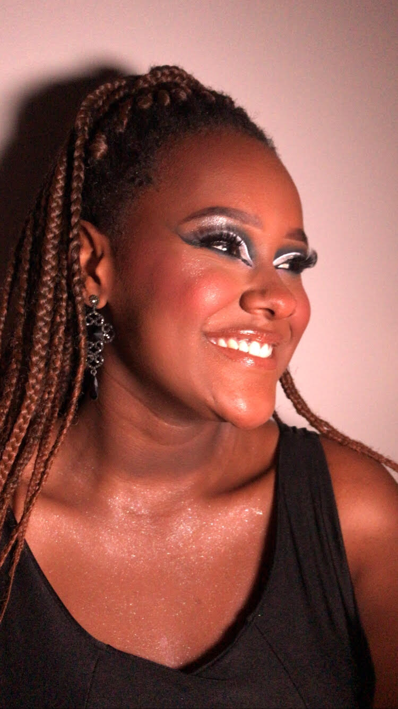

Olá meus amores!
Me chamo Tauana, sou de Ribeirão Preto. Sou apaixonada no mundo culinário, essa paixão começou há alguns anos com o intuito de aprender o básico, mas hoje busco conhecimento e aperfeiçoamento para me formar e trabalhar nessa área.
Em 2020 resolvi ensinar para vocês aquilo que eu já havia aprendido à fazer. Como muitas pessoas não têm acesso em algumas redes sociais, decidi criar este site onde vamos aprender juntos um pouco de culinária.
